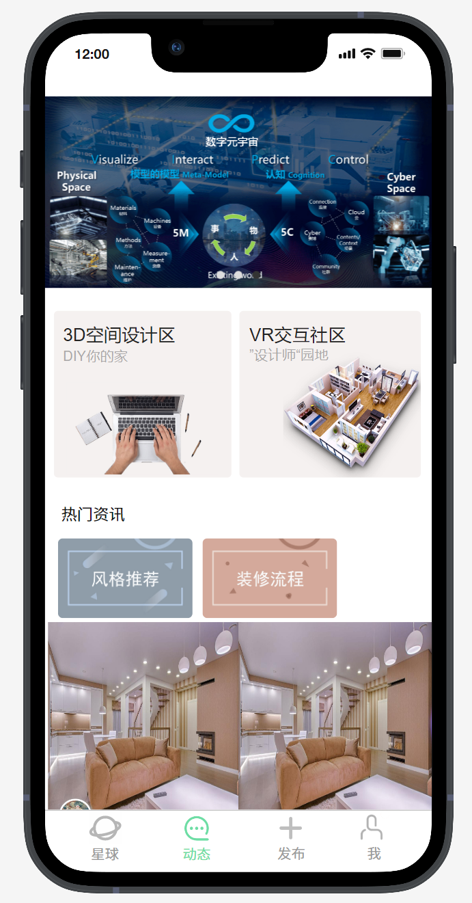
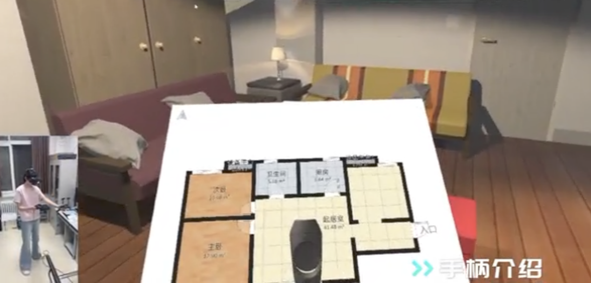

V 创家
交互社区
V创家（VR-交互论坛区旨在搭建一个新式的社交空间，不仅可以满足人们线上社交的功能，而且如同专业论坛一样，人们在平台上可以分享自己的设计作品或者理念，同时交互论坛区还秉承着“寓学于乐”的理念，为广大渴望了解行业知识的用户提供了一个知识分享和解答的平台。

用户行为分析
C端市场日趋饱和，人口红利消失也已经是老生常谈的话题，此时，发展潜力巨大的企业服务市场再一次被大家推向台前，至于能否成为下一个风口，又有谁能够乘风而上。“V创家”将优先立足于To
B，以企业作为服务主体为企业客户提供平台、产品或服务并赚取利润。
“V创家”致力于为家装企业提供咨询和解决方案产品。首先，“V创家”的交互平台将会为客户企业提供的是庞大的用户、客户资源，广告位，各种平台福利，服务支持等等平台型业务。我们希望为合作企业提高企业效率和效益，助力企业效益的创造
家装设计
V创家APP中会提供3D扫描套件，用户可以通过摄像的方式实景环绕，扫描整屋结构，并在手动微调核实后生成专属于用户的毛坯房模型，在全景模拟系统中，用户可以自行拖动家具摆件，进行自主装修设计。3D模拟设计方案可以随时保存，并且用户可以随时和线上的设计师进行沟通。
同时V创家支持对用户设计完的房屋进行比较粗略的报价，软件可以支持不同品牌的家具直接放入3D空间供用户设计时使用。
用户在设计的全过程中，都支持进入虚拟空间中进行实景体验自己的设计。当用户完成设计后，V创家会根据用户的设计样图自动生成设计图纸，并按照需求提供了供选择购买的家具品牌及具体商品，真正实现了线上家装设计的一条龙服务。
页面主要设有扫描房型或设计图录入功能，能以主人公视角进行3D室内设计，只需用手机摄像头或iPhone后置的激光雷达扫描屋内构造或是录入设计图纸，即可在手机上出现3D的房屋构造，户主不仅可以在手机或网站页面上设计，还可以戴上VR眼镜，在未来的家中漫游，利用交互设备，对空间中的色彩、材质、陈设搭配等进行更换，随心所欲设计出心目中最理想的家。
